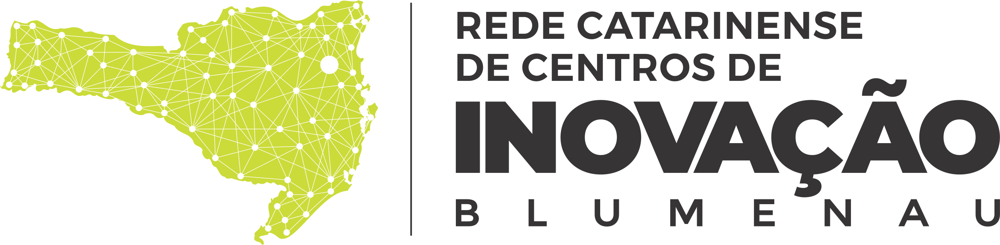
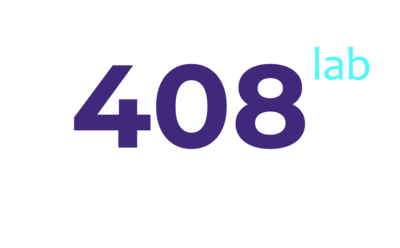
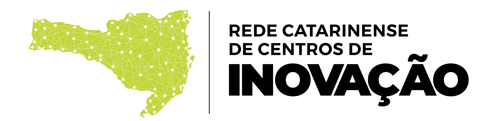
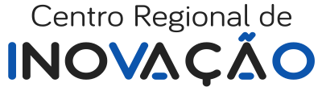
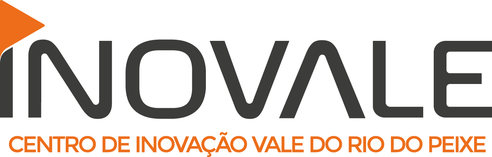
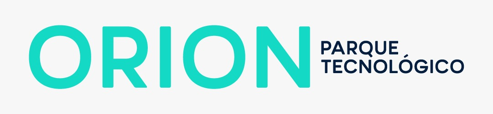

<!DOCTYPE html>
<head>    
    <meta http-equiv="content-type" content="text/html; charset=UTF-8" />
    
        <script>
            L_NO_TOUCH = false;
            L_DISABLE_3D = false;
        </script>
    
    <style>html, body {width: 100%;height: 100%;margin: 0;padding: 0;}</style>
    <style>#map {position:absolute;top:0;bottom:0;right:0;left:0;}</style>
    <script src="https://cdn.jsdelivr.net/npm/leaflet@1.6.0/dist/leaflet.js"></script>
    <script src="https://code.jquery.com/jquery-1.12.4.min.js"></script>
    <script src="https://maxcdn.bootstrapcdn.com/bootstrap/3.2.0/js/bootstrap.min.js"></script>
    <script src="https://cdnjs.cloudflare.com/ajax/libs/Leaflet.awesome-markers/2.0.2/leaflet.awesome-markers.js"></script>
    <link rel="stylesheet" href="https://cdn.jsdelivr.net/npm/leaflet@1.6.0/dist/leaflet.css"/>
    <link rel="stylesheet" href="https://maxcdn.bootstrapcdn.com/bootstrap/3.2.0/css/bootstrap.min.css"/>
    <link rel="stylesheet" href="https://maxcdn.bootstrapcdn.com/bootstrap/3.2.0/css/bootstrap-theme.min.css"/>
    <link rel="stylesheet" href="https://maxcdn.bootstrapcdn.com/font-awesome/4.6.3/css/font-awesome.min.css"/>
    <link rel="stylesheet" href="https://cdnjs.cloudflare.com/ajax/libs/Leaflet.awesome-markers/2.0.2/leaflet.awesome-markers.css"/>
    <link rel="stylesheet" href="https://cdn.jsdelivr.net/gh/python-visualization/folium/folium/templates/leaflet.awesome.rotate.min.css"/>
    
            <meta name="viewport" content="width=device-width,
                initial-scale=1.0, maximum-scale=1.0, user-scalable=no" />
            <style>
                #map_79bd04a89eb11febc8723684076a94ff {
                    position: relative;
                    width: 100.0%;
                    height: 100.0%;
                    left: 0.0%;
                    top: 0.0%;
                }
            </style>
        
</head>
<body>    
    
            <div class="folium-map" id="map_79bd04a89eb11febc8723684076a94ff" ></div>
        
</body>
<script>    
    
            var map_79bd04a89eb11febc8723684076a94ff = L.map(
                "map_79bd04a89eb11febc8723684076a94ff",
                {
                    center: [-27.570838, -50.6216109],
                    crs: L.CRS.EPSG3857,
                    zoom: 7.48,
                    zoomControl: true,
                    preferCanvas: false,
                }
            );

            

        
    
            var tile_layer_fa7ddc7b38dc5c14d845ac38da642441 = L.tileLayer(
                "https://{s}.tile.openstreetmap.org/{z}/{x}/{y}.png",
                {"attribution": "Data by \u0026copy; \u003ca href=\"http://openstreetmap.org\"\u003eOpenStreetMap\u003c/a\u003e, under \u003ca href=\"http://www.openstreetmap.org/copyright\"\u003eODbL\u003c/a\u003e.", "detectRetina": false, "maxNativeZoom": 18, "maxZoom": 18, "minZoom": 0, "noWrap": false, "opacity": 1, "subdomains": "abc", "tms": false}
            ).addTo(map_79bd04a89eb11febc8723684076a94ff);
        
    
            var marker_89486525404749dc2dbbb49a50d3aec0 = L.marker(
                [-26.8902, -49.08461],
                {}
            ).addTo(map_79bd04a89eb11febc8723684076a94ff);
        
    
            var icon_b0a5465ef4454ad988590dd11294ab83 = L.AwesomeMarkers.icon(
                {"extraClasses": "fa-rotate-0", "icon": "fa-solid fa-info-circle", "iconColor": "white", "markerColor": "green", "prefix": "fa"}
            );
            marker_89486525404749dc2dbbb49a50d3aec0.setIcon(icon_b0a5465ef4454ad988590dd11294ab83);
        
    
        var popup_4cfd94203e7bbcac6cf426753f5bcbb7 = L.popup({"maxWidth": 320});

        
            var html_fdddd9a8cb003a35c4d723445ea8ac1a = $(`<div id="html_fdddd9a8cb003a35c4d723445ea8ac1a" style="width: 100.0%; height: 100.0%;">      <!DOCTYPE html> <html>  <table border="0" cellpadding="1" cellspacing="1" style="width:320px"> 	<tbody> 		<tr> 			<td rowspan="3" style="vertical-align:top; width:309px"> 			<p><strong>Centro: </strong>CIB - Centro de Inovação de Blumenau</p>             <p><strong>Cidade: </strong>BLUMENAU</p> 			<p><span style="font-size:11px"><strong>Especialidades: </strong><br>🏭 Eletro Metal Mecânico</br> <br>🏭 Têxtil</br> <br>🎭 Turismo</br>  <br>🛒 Comércio</br> <br>🩺 Saúde</br></span></p> 			</td> 			<td style="text-align:center "vertical-align:center; width:150px; vertical-align:top"><a href="http://novo.institutogene.org.br/"></a></td> 		</tr>         		<tr> 			<td style="text-align:center; width:177px"></td> 		</tr> 		<tr> 			<td style="text-align:center; width:150px"><a href="http://centrosdeinovacao.sc.gov.br/centro-de-inovacao-de-blumenau/">Saiba mais</a></td> 		</tr> 	</tbody> </table>   </html> </div>`)[0];
            popup_4cfd94203e7bbcac6cf426753f5bcbb7.setContent(html_fdddd9a8cb003a35c4d723445ea8ac1a);
        

        marker_89486525404749dc2dbbb49a50d3aec0.bindPopup(popup_4cfd94203e7bbcac6cf426753f5bcbb7)
        ;

        
    
    
            marker_89486525404749dc2dbbb49a50d3aec0.bindTooltip(
                `<div>
                     CIB - Centro de Inovação de Blumenau
                 </div>`,
                {"sticky": true}
            );
        
    
            var marker_b12ce73f3a3f9a57049dd25bd618b637 = L.marker(
                [-27.048659999999998, -48.876490000000004],
                {}
            ).addTo(map_79bd04a89eb11febc8723684076a94ff);
        
    
            var icon_2d454562499729c38521be48442143c7 = L.AwesomeMarkers.icon(
                {"extraClasses": "fa-rotate-0", "icon": "fa-solid fa-info-circle", "iconColor": "white", "markerColor": "lightgray", "prefix": "fa"}
            );
            marker_b12ce73f3a3f9a57049dd25bd618b637.setIcon(icon_2d454562499729c38521be48442143c7);
        
    
        var popup_ead99812c3966a2b2c325addb560fa5e = L.popup({"maxWidth": 320});

        
            var html_93df01271978b358528c8a4457d7e87e = $(`<div id="html_93df01271978b358528c8a4457d7e87e" style="width: 100.0%; height: 100.0%;">      <!DOCTYPE html> <html>  <table border="0" cellpadding="1" cellspacing="1" style="width:320px"> 	<tbody> 		<tr> 			<td rowspan="3" style="vertical-align:top; width:309px"> 			<p><strong>Centro: </strong>408lab</p>             <p><strong>Cidade: </strong>BRUSQUE</p> 			<p><span style="font-size:11px"><strong>Especialidades: </strong><br>🏭 Moda</br> <br>🛒 Varejo</br> <br>🏭 Automação Industrial</br> <br>📖 Educação</br> <br>🩺 Saúde</br></span></p> 			</td> 			<td style="text-align:center "vertical-align:center; width:150px; vertical-align:top"><a href="www.408lab.com/"></a></td> 		</tr>         		<tr> 			<td style="text-align:center; width:177px"></td> 		</tr> 		<tr> 			<td style="text-align:center; width:150px"><a href="http://centrosdeinovacao.sc.gov.br/centro-de-inovacao-de-brusque/">Saiba mais</a></td> 		</tr> 	</tbody> </table>   </html> </div>`)[0];
            popup_ead99812c3966a2b2c325addb560fa5e.setContent(html_93df01271978b358528c8a4457d7e87e);
        

        marker_b12ce73f3a3f9a57049dd25bd618b637.bindPopup(popup_ead99812c3966a2b2c325addb560fa5e)
        ;

        
    
    
            marker_b12ce73f3a3f9a57049dd25bd618b637.bindTooltip(
                `<div>
                     408lab
                 </div>`,
                {"sticky": true}
            );
        
    
            var marker_ddd8ebd2528b994a15ff1d9947b4b00c = L.marker(
                [-26.77686, -51.01565],
                {}
            ).addTo(map_79bd04a89eb11febc8723684076a94ff);
        
    
            var icon_8586f3df3a2a5a52bc17e85ea7895c97 = L.AwesomeMarkers.icon(
                {"extraClasses": "fa-rotate-0", "icon": "fa-solid fa-info-circle", "iconColor": "white", "markerColor": "green", "prefix": "fa"}
            );
            marker_ddd8ebd2528b994a15ff1d9947b4b00c.setIcon(icon_8586f3df3a2a5a52bc17e85ea7895c97);
        
    
        var popup_b95c132e483a2a8be6e7938e90e08e55 = L.popup({"maxWidth": 320});

        
            var html_7f6889c6f1e2b6151cbdf24a4112db2c = $(`<div id="html_7f6889c6f1e2b6151cbdf24a4112db2c" style="width: 100.0%; height: 100.0%;">      <!DOCTYPE html> <html>  <table border="0" cellpadding="1" cellspacing="1" style="width:320px"> 	<tbody> 		<tr> 			<td rowspan="3" style="vertical-align:top; width:309px"> 			<p><strong>Centro: </strong>Inova Contestado</p>             <p><strong>Cidade: </strong>CAÇADOR</p> 			<p><span style="font-size:11px"><strong>Especialidades: </strong><br>🌱 Indústria florestal</br> <br>🌱 Alimentos</br> <br>🏭 Plástico</br> <br>🏭 Têxtil</br></span></p> 			</td> 			<td style="text-align:center "vertical-align:center; width:150px; vertical-align:top"><a href="inovacontestado.com.br/home"></a></td> 		</tr>         		<tr> 			<td style="text-align:center; width:177px"></td> 		</tr> 		<tr> 			<td style="text-align:center; width:150px"><a href="http://centrosdeinovacao.sc.gov.br/centro-de-inovacao-de-cacador">Saiba mais</a></td> 		</tr> 	</tbody> </table>   </html> </div>`)[0];
            popup_b95c132e483a2a8be6e7938e90e08e55.setContent(html_7f6889c6f1e2b6151cbdf24a4112db2c);
        

        marker_ddd8ebd2528b994a15ff1d9947b4b00c.bindPopup(popup_b95c132e483a2a8be6e7938e90e08e55)
        ;

        
    
    
            marker_ddd8ebd2528b994a15ff1d9947b4b00c.bindTooltip(
                `<div>
                     Inova Contestado
                 </div>`,
                {"sticky": true}
            );
        
    
            var marker_e4c64aee30a7a14bf0a56fc9580bc2c4 = L.marker(
                [-27.09283, -52.66336999999999],
                {}
            ).addTo(map_79bd04a89eb11febc8723684076a94ff);
        
    
            var icon_5baf041d5faf60ec301c6f6b8a0bf03f = L.AwesomeMarkers.icon(
                {"extraClasses": "fa-rotate-0", "icon": "fa-solid fa-info-circle", "iconColor": "white", "markerColor": "green", "prefix": "fa"}
            );
            marker_e4c64aee30a7a14bf0a56fc9580bc2c4.setIcon(icon_5baf041d5faf60ec301c6f6b8a0bf03f);
        
    
        var popup_1644770713c5802637f46c211b8e9661 = L.popup({"maxWidth": 320});

        
            var html_d90ba08b0c2991bb237244b0bb54c68f = $(`<div id="html_d90ba08b0c2991bb237244b0bb54c68f" style="width: 100.0%; height: 100.0%;">      <!DOCTYPE html> <html>  <table border="0" cellpadding="1" cellspacing="1" style="width:320px"> 	<tbody> 		<tr> 			<td rowspan="3" style="vertical-align:top; width:309px"> 			<p><strong>Centro: </strong>Pollen Parque Científico e Tecnológico</p>             <p><strong>Cidade: </strong>CHAPECÓ</p> 			<p><span style="font-size:11px"><strong>Especialidades: </strong><br>🌱 Agro</br> <br>🩺 Saúde</br> <br>🏭 Máquinas e Equipamentos</br> <br>💻 TIC</br></span></p> 			</td> 			<td style="text-align:center "vertical-align:center; width:150px; vertical-align:top"><a href="nan"></a></td> 		</tr>         		<tr> 			<td style="text-align:center; width:177px"></td> 		</tr> 		<tr> 			<td style="text-align:center; width:150px"><a href="http://centrosdeinovacao.sc.gov.br/centro-de-inovacao-de-chapeco">Saiba mais</a></td> 		</tr> 	</tbody> </table>   </html> </div>`)[0];
            popup_1644770713c5802637f46c211b8e9661.setContent(html_d90ba08b0c2991bb237244b0bb54c68f);
        

        marker_e4c64aee30a7a14bf0a56fc9580bc2c4.bindPopup(popup_1644770713c5802637f46c211b8e9661)
        ;

        
    
    
            marker_e4c64aee30a7a14bf0a56fc9580bc2c4.bindTooltip(
                `<div>
                     Pollen Parque Científico e Tecnológico
                 </div>`,
                {"sticky": true}
            );
        
    
            var marker_89825824f19ecf2bc3bdb9bf1d75b95e = L.marker(
                [-28.679040000000004, -49.35522],
                {}
            ).addTo(map_79bd04a89eb11febc8723684076a94ff);
        
    
            var icon_d378a16a960375d68fee6164b882397a = L.AwesomeMarkers.icon(
                {"extraClasses": "fa-rotate-0", "icon": "fa-solid fa-info-circle", "iconColor": "white", "markerColor": "lightgray", "prefix": "fa"}
            );
            marker_89825824f19ecf2bc3bdb9bf1d75b95e.setIcon(icon_d378a16a960375d68fee6164b882397a);
        
    
        var popup_2289a5c5f755f180fff27c2a0d803e15 = L.popup({"maxWidth": 320});

        
            var html_dab446ae6b0721a21a03e7839931d0ad = $(`<div id="html_dab446ae6b0721a21a03e7839931d0ad" style="width: 100.0%; height: 100.0%;">      <!DOCTYPE html> <html>  <table border="0" cellpadding="1" cellspacing="1" style="width:320px"> 	<tbody> 		<tr> 			<td rowspan="3" style="vertical-align:top; width:309px"> 			<p><strong>Centro: </strong>CRIO</p>             <p><strong>Cidade: </strong>CRICIÚMA</p> 			<p><span style="font-size:11px"><strong>Especialidades: </strong><br>🏭 Cerâmica</br> <br>🏭 Plásticos</br> <br>🏭 Moda</br></span></p> 			</td> 			<td style="text-align:center "vertical-align:center; width:150px; vertical-align:top"><a href="nan"></a></td> 		</tr>         		<tr> 			<td style="text-align:center; width:177px"></td> 		</tr> 		<tr> 			<td style="text-align:center; width:150px"><a href="http://centrosdeinovacao.sc.gov.br/centro-de-inovacao-de-criciuma">Saiba mais</a></td> 		</tr> 	</tbody> </table>   </html> </div>`)[0];
            popup_2289a5c5f755f180fff27c2a0d803e15.setContent(html_dab446ae6b0721a21a03e7839931d0ad);
        

        marker_89825824f19ecf2bc3bdb9bf1d75b95e.bindPopup(popup_2289a5c5f755f180fff27c2a0d803e15)
        ;

        
    
    
            marker_89825824f19ecf2bc3bdb9bf1d75b95e.bindTooltip(
                `<div>
                     CRIO
                 </div>`,
                {"sticky": true}
            );
        
    
            var marker_7fa903c97dbaee1297dcbf766c2a6229 = L.marker(
                [-27.54468, -48.50019],
                {}
            ).addTo(map_79bd04a89eb11febc8723684076a94ff);
        
    
            var icon_9ee2d87c8cf5e3ec9ca5b8d964c48287 = L.AwesomeMarkers.icon(
                {"extraClasses": "fa-rotate-0", "icon": "fa-solid fa-info-circle", "iconColor": "white", "markerColor": "green", "prefix": "fa"}
            );
            marker_7fa903c97dbaee1297dcbf766c2a6229.setIcon(icon_9ee2d87c8cf5e3ec9ca5b8d964c48287);
        
    
        var popup_9c915d39e055bb41490d859007354934 = L.popup({"maxWidth": 320});

        
            var html_e523f41b9b4d7c3a5ea19a289461d035 = $(`<div id="html_e523f41b9b4d7c3a5ea19a289461d035" style="width: 100.0%; height: 100.0%;">      <!DOCTYPE html> <html>  <table border="0" cellpadding="1" cellspacing="1" style="width:320px"> 	<tbody> 		<tr> 			<td rowspan="3" style="vertical-align:top; width:309px"> 			<p><strong>Centro: </strong>Associação Catarinense de Tecnologia - ACATE</p>             <p><strong>Cidade: </strong>FLORIANÓPOLIS</p> 			<p><span style="font-size:11px"><strong>Especialidades: </strong><br>💸 Fintech</br> <br>📖 Edtech</br> <br>💡 Energia</br></span></p> 			</td> 			<td style="text-align:center "vertical-align:center; width:150px; vertical-align:top"><a href="https://www.acate.com.br/"></a></td> 		</tr>         		<tr> 			<td style="text-align:center; width:177px"></td> 		</tr> 		<tr> 			<td style="text-align:center; width:150px"><a href="http://centrosdeinovacao.sc.gov.br/centro-de-inovacao-de-florianopolis">Saiba mais</a></td> 		</tr> 	</tbody> </table>   </html> </div>`)[0];
            popup_9c915d39e055bb41490d859007354934.setContent(html_e523f41b9b4d7c3a5ea19a289461d035);
        

        marker_7fa903c97dbaee1297dcbf766c2a6229.bindPopup(popup_9c915d39e055bb41490d859007354934)
        ;

        
    
    
            marker_7fa903c97dbaee1297dcbf766c2a6229.bindTooltip(
                `<div>
                     Associação Catarinense de Tecnologia - ACATE
                 </div>`,
                {"sticky": true}
            );
        
    
            var marker_1b80e07f13704445ad69dd730377e73a = L.marker(
                [-26.953129999999998, -48.72815],
                {}
            ).addTo(map_79bd04a89eb11febc8723684076a94ff);
        
    
            var icon_25163048da1572b08b9f6faf546e1a79 = L.AwesomeMarkers.icon(
                {"extraClasses": "fa-rotate-0", "icon": "fa-solid fa-info-circle", "iconColor": "white", "markerColor": "lightgray", "prefix": "fa"}
            );
            marker_1b80e07f13704445ad69dd730377e73a.setIcon(icon_25163048da1572b08b9f6faf546e1a79);
        
    
        var popup_93fceea2c85e7ea66480726294ed50a0 = L.popup({"maxWidth": 320});

        
            var html_0854cce00e7170781463d71ac3e574aa = $(`<div id="html_0854cce00e7170781463d71ac3e574aa" style="width: 100.0%; height: 100.0%;">      <!DOCTYPE html> <html>  <table border="0" cellpadding="1" cellspacing="1" style="width:320px"> 	<tbody> 		<tr> 			<td rowspan="3" style="vertical-align:top; width:309px"> 			<p><strong>Centro: </strong>Centro Regional de Inovação</p>             <p><strong>Cidade: </strong>ITAJAÍ</p> 			<p><span style="font-size:11px"><strong>Especialidades: </strong><br>🚛 Logística</br> <br>🛌 Turismo</br> <br>🌱 Economia do Mar</br> <br>🏭 Indústria Naval</br> <br>🩺 Saúde</br></span></p> 			</td> 			<td style="text-align:center "vertical-align:center; width:150px; vertical-align:top"><a href="https://crinovacao.com.br/"></a></td> 		</tr>         		<tr> 			<td style="text-align:center; width:177px"></td> 		</tr> 		<tr> 			<td style="text-align:center; width:150px"><a href="http://centrosdeinovacao.sc.gov.br/centro-de-inovacao-de-itajai">Saiba mais</a></td> 		</tr> 	</tbody> </table>   </html> </div>`)[0];
            popup_93fceea2c85e7ea66480726294ed50a0.setContent(html_0854cce00e7170781463d71ac3e574aa);
        

        marker_1b80e07f13704445ad69dd730377e73a.bindPopup(popup_93fceea2c85e7ea66480726294ed50a0)
        ;

        
    
    
            marker_1b80e07f13704445ad69dd730377e73a.bindTooltip(
                `<div>
                     Centro Regional de Inovação
                 </div>`,
                {"sticky": true}
            );
        
    
            var marker_e27601d25cd08e770346bf5968a42f39 = L.marker(
                [-26.4627, -49.12198],
                {}
            ).addTo(map_79bd04a89eb11febc8723684076a94ff);
        
    
            var icon_180638b1ac584822ecb01395f839d3e3 = L.AwesomeMarkers.icon(
                {"extraClasses": "fa-rotate-0", "icon": "fa-solid fa-info-circle", "iconColor": "white", "markerColor": "green", "prefix": "fa"}
            );
            marker_e27601d25cd08e770346bf5968a42f39.setIcon(icon_180638b1ac584822ecb01395f839d3e3);
        
    
        var popup_09a832e42a2616ff41aea03ac0801498 = L.popup({"maxWidth": 320});

        
            var html_212e407b0853481083c620d13b924e81 = $(`<div id="html_212e407b0853481083c620d13b924e81" style="width: 100.0%; height: 100.0%;">      <!DOCTYPE html> <html>  <table border="0" cellpadding="1" cellspacing="1" style="width:320px"> 	<tbody> 		<tr> 			<td rowspan="3" style="vertical-align:top; width:309px"> 			<p><strong>Centro: </strong>Novale Hub</p>             <p><strong>Cidade: </strong>JARAGUÁ DO SUL</p> 			<p><span style="font-size:11px"><strong>Especialidades: </strong><br>💻 TIC</br> <br>💡 Energia</br> <br>🏭 Eletrometalmecânica</br> <br>🏭 Químicos e novos materiais</br></span></p> 			</td> 			<td style="text-align:center "vertical-align:center; width:150px; vertical-align:top"><a href="http://www.novalehub.com.br/"></a></td> 		</tr>         		<tr> 			<td style="text-align:center; width:177px"></td> 		</tr> 		<tr> 			<td style="text-align:center; width:150px"><a href="http://centrosdeinovacao.sc.gov.br/centro-de-inovacao-de-jaragua-do-sul/">Saiba mais</a></td> 		</tr> 	</tbody> </table>   </html> </div>`)[0];
            popup_09a832e42a2616ff41aea03ac0801498.setContent(html_212e407b0853481083c620d13b924e81);
        

        marker_e27601d25cd08e770346bf5968a42f39.bindPopup(popup_09a832e42a2616ff41aea03ac0801498)
        ;

        
    
    
            marker_e27601d25cd08e770346bf5968a42f39.bindTooltip(
                `<div>
                     Novale Hub
                 </div>`,
                {"sticky": true}
            );
        
    
            var marker_f884f032d2ff7eeb0eecdc575dc4bfa1 = L.marker(
                [-27.167579999999997, -51.52045],
                {}
            ).addTo(map_79bd04a89eb11febc8723684076a94ff);
        
    
            var icon_3fb350a5929890364b6f51fc27f4faa0 = L.AwesomeMarkers.icon(
                {"extraClasses": "fa-rotate-0", "icon": "fa-solid fa-info-circle", "iconColor": "white", "markerColor": "green", "prefix": "fa"}
            );
            marker_f884f032d2ff7eeb0eecdc575dc4bfa1.setIcon(icon_3fb350a5929890364b6f51fc27f4faa0);
        
    
        var popup_ab6c013f0152fe2aeba0e025818bac01 = L.popup({"maxWidth": 320});

        
            var html_b945ccab2e958153696f4f7edfc1f5b1 = $(`<div id="html_b945ccab2e958153696f4f7edfc1f5b1" style="width: 100.0%; height: 100.0%;">      <!DOCTYPE html> <html>  <table border="0" cellpadding="1" cellspacing="1" style="width:320px"> 	<tbody> 		<tr> 			<td rowspan="3" style="vertical-align:top; width:309px"> 			<p><strong>Centro: </strong>Polo de Inovação Vale do Rio do Peixe – Inovale</p>             <p><strong>Cidade: </strong>JOAÇABA</p> 			<p><span style="font-size:11px"><strong>Especialidades: </strong><br>🌱 Alimentos</br> <br>🩺 Engenharia Biomédica</br> <br>💡 Energias Renováveis</br></span></p> 			</td> 			<td style="text-align:center "vertical-align:center; width:150px; vertical-align:top"><a href="https://www.poloinovale.com.br/"></a></td> 		</tr>         		<tr> 			<td style="text-align:center; width:177px"></td> 		</tr> 		<tr> 			<td style="text-align:center; width:150px"><a href="http://centrosdeinovacao.sc.gov.br/centro-de-inovacao-de-joacaba">Saiba mais</a></td> 		</tr> 	</tbody> </table>   </html> </div>`)[0];
            popup_ab6c013f0152fe2aeba0e025818bac01.setContent(html_b945ccab2e958153696f4f7edfc1f5b1);
        

        marker_f884f032d2ff7eeb0eecdc575dc4bfa1.bindPopup(popup_ab6c013f0152fe2aeba0e025818bac01)
        ;

        
    
    
            marker_f884f032d2ff7eeb0eecdc575dc4bfa1.bindTooltip(
                `<div>
                     Polo de Inovação Vale do Rio do Peixe – Inovale
                 </div>`,
                {"sticky": true}
            );
        
    
            var marker_0d08dca53e337fa3b7a5a8db123a863d = L.marker(
                [-26.23589, -48.88243],
                {}
            ).addTo(map_79bd04a89eb11febc8723684076a94ff);
        
    
            var icon_015a719be1ee01c929da705d62c69ae6 = L.AwesomeMarkers.icon(
                {"extraClasses": "fa-rotate-0", "icon": "fa-solid fa-info-circle", "iconColor": "white", "markerColor": "green", "prefix": "fa"}
            );
            marker_0d08dca53e337fa3b7a5a8db123a863d.setIcon(icon_015a719be1ee01c929da705d62c69ae6);
        
    
        var popup_f10d1d95f78ab63a3ff17bc99f2ae11b = L.popup({"maxWidth": 320});

        
            var html_bd03c637ca6307519571a7f5fdb549c9 = $(`<div id="html_bd03c637ca6307519571a7f5fdb549c9" style="width: 100.0%; height: 100.0%;">      <!DOCTYPE html> <html>  <table border="0" cellpadding="1" cellspacing="1" style="width:320px"> 	<tbody> 		<tr> 			<td rowspan="3" style="vertical-align:top; width:309px"> 			<p><strong>Centro: </strong>Ágora Tech Park</p>             <p><strong>Cidade: </strong>JOINVILLE</p> 			<p><span style="font-size:11px"><strong>Especialidades: </strong><br>🩺 Saúde</br> <br>🏭 Indústria 4.0</br> <br>🏛 Cidades inteligentes</br></span></p> 			</td> 			<td style="text-align:center "vertical-align:center; width:150px; vertical-align:top"><a href="https://www.agoratechpark.com.br/"></a></td> 		</tr>         		<tr> 			<td style="text-align:center; width:177px"></td> 		</tr> 		<tr> 			<td style="text-align:center; width:150px"><a href="http://centrosdeinovacao.sc.gov.br/centro-de-inovacao-de-joinville">Saiba mais</a></td> 		</tr> 	</tbody> </table>   </html> </div>`)[0];
            popup_f10d1d95f78ab63a3ff17bc99f2ae11b.setContent(html_bd03c637ca6307519571a7f5fdb549c9);
        

        marker_0d08dca53e337fa3b7a5a8db123a863d.bindPopup(popup_f10d1d95f78ab63a3ff17bc99f2ae11b)
        ;

        
    
    
            marker_0d08dca53e337fa3b7a5a8db123a863d.bindTooltip(
                `<div>
                     Ágora Tech Park
                 </div>`,
                {"sticky": true}
            );
        
    
            var marker_ab05dc3c8830aa8043fb3582c6e3287a = L.marker(
                [-27.801479999999998, -50.3372],
                {}
            ).addTo(map_79bd04a89eb11febc8723684076a94ff);
        
    
            var icon_01bc3962f571ae54133fe36db09622e6 = L.AwesomeMarkers.icon(
                {"extraClasses": "fa-rotate-0", "icon": "fa-solid fa-info-circle", "iconColor": "white", "markerColor": "green", "prefix": "fa"}
            );
            marker_ab05dc3c8830aa8043fb3582c6e3287a.setIcon(icon_01bc3962f571ae54133fe36db09622e6);
        
    
        var popup_5017012600a8d1db996742cf08c7eb08 = L.popup({"maxWidth": 320});

        
            var html_d5c6940e3923e8e6aedb42fe28c2f341 = $(`<div id="html_d5c6940e3923e8e6aedb42fe28c2f341" style="width: 100.0%; height: 100.0%;">      <!DOCTYPE html> <html>  <table border="0" cellpadding="1" cellspacing="1" style="width:320px"> 	<tbody> 		<tr> 			<td rowspan="3" style="vertical-align:top; width:309px"> 			<p><strong>Centro: </strong>Orion Parque Tecnológico</p>             <p><strong>Cidade: </strong>LAGES</p> 			<p><span style="font-size:11px"><strong>Especialidades: </strong><br>🩺 Saúde</br> <br>🌱 Agro</br> <br>🩺 Biotecnologia</br> <br>🏛 Governo</br> <br>🚛 Logística</br></span></p> 			</td> 			<td style="text-align:center "vertical-align:center; width:150px; vertical-align:top"><a href="https://www.orionparque.com/"></a></td> 		</tr>         		<tr> 			<td style="text-align:center; width:177px"></td> 		</tr> 		<tr> 			<td style="text-align:center; width:150px"><a href="http://centrosdeinovacao.sc.gov.br/centro-de-inovacao-de-lages">Saiba mais</a></td> 		</tr> 	</tbody> </table>   </html> </div>`)[0];
            popup_5017012600a8d1db996742cf08c7eb08.setContent(html_d5c6940e3923e8e6aedb42fe28c2f341);
        

        marker_ab05dc3c8830aa8043fb3582c6e3287a.bindPopup(popup_5017012600a8d1db996742cf08c7eb08)
        ;

        
    
    
            marker_ab05dc3c8830aa8043fb3582c6e3287a.bindTooltip(
                `<div>
                     Orion Parque Tecnológico
                 </div>`,
                {"sticky": true}
            );
        
    
            var marker_b2667d72ebc4417df85a23336b34f580 = L.marker(
                [-27.21865, -49.64812],
                {}
            ).addTo(map_79bd04a89eb11febc8723684076a94ff);
        
    
            var icon_fcf5467f4c698a0ce5fadf1e2b8f0d83 = L.AwesomeMarkers.icon(
                {"extraClasses": "fa-rotate-0", "icon": "fa-solid fa-info-circle", "iconColor": "white", "markerColor": "green", "prefix": "fa"}
            );
            marker_b2667d72ebc4417df85a23336b34f580.setIcon(icon_fcf5467f4c698a0ce5fadf1e2b8f0d83);
        
    
        var popup_129e656618fab700982ab9e2e0726b98 = L.popup({"maxWidth": 320});

        
            var html_c6a98ca41949529c7f40af3abfa01fb8 = $(`<div id="html_c6a98ca41949529c7f40af3abfa01fb8" style="width: 100.0%; height: 100.0%;">      <!DOCTYPE html> <html>  <table border="0" cellpadding="1" cellspacing="1" style="width:320px"> 	<tbody> 		<tr> 			<td rowspan="3" style="vertical-align:top; width:309px"> 			<p><strong>Centro: </strong>Centro de Inovação Norberto Frahm - CINF</p>             <p><strong>Cidade: </strong>RIO DO SUL</p> 			<p><span style="font-size:11px"><strong>Especialidades: </strong><br>🩺 Desenvolvimento Social</br> <br>💻 TIC</br> <br>💻 Gestão e Automação de Processos</br></span></p> 			</td> 			<td style="text-align:center "vertical-align:center; width:150px; vertical-align:top"><a href="https://cinf.com.br/"></a></td> 		</tr>         		<tr> 			<td style="text-align:center; width:177px"></td> 		</tr> 		<tr> 			<td style="text-align:center; width:150px"><a href="http://centrosdeinovacao.sc.gov.br/centro-de-inovacao-de-rio-do-sul/">Saiba mais</a></td> 		</tr> 	</tbody> </table>   </html> </div>`)[0];
            popup_129e656618fab700982ab9e2e0726b98.setContent(html_c6a98ca41949529c7f40af3abfa01fb8);
        

        marker_b2667d72ebc4417df85a23336b34f580.bindPopup(popup_129e656618fab700982ab9e2e0726b98)
        ;

        
    
    
            marker_b2667d72ebc4417df85a23336b34f580.bindTooltip(
                `<div>
                     Centro de Inovação Norberto Frahm - CINF
                 </div>`,
                {"sticky": true}
            );
        
    
            var marker_0f02f87873b0564ae6dd9cb934eaf160 = L.marker(
                [-26.24792, -49.38215],
                {}
            ).addTo(map_79bd04a89eb11febc8723684076a94ff);
        
    
            var icon_dbf79452909933345a16b89a6882a223 = L.AwesomeMarkers.icon(
                {"extraClasses": "fa-rotate-0", "icon": "fa-solid fa-info-circle", "iconColor": "white", "markerColor": "lightgray", "prefix": "fa"}
            );
            marker_0f02f87873b0564ae6dd9cb934eaf160.setIcon(icon_dbf79452909933345a16b89a6882a223);
        
    
        var popup_4437c7758eed8d5837d0b4c2a0d8df97 = L.popup({"maxWidth": 320});

        
            var html_5c84d57b4a31ab566f36f4402d7ed5b8 = $(`<div id="html_5c84d57b4a31ab566f36f4402d7ed5b8" style="width: 100.0%; height: 100.0%;">      <!DOCTYPE html> <html>  <table border="0" cellpadding="1" cellspacing="1" style="width:320px"> 	<tbody> 		<tr> 			<td rowspan="3" style="vertical-align:top; width:309px"> 			<p><strong>Centro: </strong>Centro de Inovação da Região do Planalto Norte</p>             <p><strong>Cidade: </strong>SÃO BENTO DO SUL</p> 			<p><span style="font-size:11px"><strong>Especialidades: </strong><br>🏭 Metalmecânica e Automação</br> <br>💻 TIC</br> <br>🩺 Saúde</br> <br>🏭 Química e Materiais</br></span></p> 			</td> 			<td style="text-align:center "vertical-align:center; width:150px; vertical-align:top"><a href="www.ciplanaltonorte.com.br"></a></td> 		</tr>         		<tr> 			<td style="text-align:center; width:177px"></td> 		</tr> 		<tr> 			<td style="text-align:center; width:150px"><a href="http://centrosdeinovacao.sc.gov.br/centro-de-inovacao-de-sao-bento-do-sul/">Saiba mais</a></td> 		</tr> 	</tbody> </table>   </html> </div>`)[0];
            popup_4437c7758eed8d5837d0b4c2a0d8df97.setContent(html_5c84d57b4a31ab566f36f4402d7ed5b8);
        

        marker_0f02f87873b0564ae6dd9cb934eaf160.bindPopup(popup_4437c7758eed8d5837d0b4c2a0d8df97)
        ;

        
    
    
            marker_0f02f87873b0564ae6dd9cb934eaf160.bindTooltip(
                `<div>
                     Centro de Inovação da Região do Planalto Norte
                 </div>`,
                {"sticky": true}
            );
        
    
            var marker_87a3768cb174ceffbb2688d4b571d389 = L.marker(
                [-28.470409999999998, -49.00092],
                {}
            ).addTo(map_79bd04a89eb11febc8723684076a94ff);
        
    
            var icon_e42ba25adff2f85523413e1662202b14 = L.AwesomeMarkers.icon(
                {"extraClasses": "fa-rotate-0", "icon": "fa-solid fa-info-circle", "iconColor": "white", "markerColor": "lightgray", "prefix": "fa"}
            );
            marker_87a3768cb174ceffbb2688d4b571d389.setIcon(icon_e42ba25adff2f85523413e1662202b14);
        
    
        var popup_425f871a9a3b0c0aed093386b375fb93 = L.popup({"maxWidth": 320});

        
            var html_e2aebc09d3b63171f3dea9cbc56509e9 = $(`<div id="html_e2aebc09d3b63171f3dea9cbc56509e9" style="width: 100.0%; height: 100.0%;">      <!DOCTYPE html> <html>  <table border="0" cellpadding="1" cellspacing="1" style="width:320px"> 	<tbody> 		<tr> 			<td rowspan="3" style="vertical-align:top; width:309px"> 			<p><strong>Centro: </strong>Centro de Inovação de Tubarão</p>             <p><strong>Cidade: </strong>TUBARÃO</p> 			<p><span style="font-size:11px"><strong>Especialidades: </strong><br>🩺 Saúde</br> <br>💡 Energias Renováveis</br> <br>🏛 Cidades Inteligentes</br></span></p> 			</td> 			<td style="text-align:center "vertical-align:center; width:150px; vertical-align:top"><a href="nan"></a></td> 		</tr>         		<tr> 			<td style="text-align:center; width:177px"></td> 		</tr> 		<tr> 			<td style="text-align:center; width:150px"><a href="http://centrosdeinovacao.sc.gov.br/centro-de-inovacao-de-tubarao">Saiba mais</a></td> 		</tr> 	</tbody> </table>   </html> </div>`)[0];
            popup_425f871a9a3b0c0aed093386b375fb93.setContent(html_e2aebc09d3b63171f3dea9cbc56509e9);
        

        marker_87a3768cb174ceffbb2688d4b571d389.bindPopup(popup_425f871a9a3b0c0aed093386b375fb93)
        ;

        
    
    
            marker_87a3768cb174ceffbb2688d4b571d389.bindTooltip(
                `<div>
                     Centro de Inovação de Tubarão
                 </div>`,
                {"sticky": true}
            );
        
    
            var marker_b008a155edcbcde914d3cd1eae152135 = L.marker(
                [-27.02542, -51.14561],
                {}
            ).addTo(map_79bd04a89eb11febc8723684076a94ff);
        
    
            var icon_8a787379242d01d0259794f25f2cdfee = L.AwesomeMarkers.icon(
                {"extraClasses": "fa-rotate-0", "icon": "fa-solid fa-info-circle", "iconColor": "white", "markerColor": "green", "prefix": "fa"}
            );
            marker_b008a155edcbcde914d3cd1eae152135.setIcon(icon_8a787379242d01d0259794f25f2cdfee);
        
    
        var popup_a843ac0a6f32b34d5ebf8521002d4e20 = L.popup({"maxWidth": 320});

        
            var html_b99e7aa5654ab6c5f4d4ea3add9c1f64 = $(`<div id="html_b99e7aa5654ab6c5f4d4ea3add9c1f64" style="width: 100.0%; height: 100.0%;">      <!DOCTYPE html> <html>  <table border="0" cellpadding="1" cellspacing="1" style="width:320px"> 	<tbody> 		<tr> 			<td rowspan="3" style="vertical-align:top; width:309px"> 			<p><strong>Centro: </strong>Centro de Inovação Dante Martorano</p>             <p><strong>Cidade: </strong>VIDEIRA</p> 			<p><span style="font-size:11px"><strong>Especialidades: </strong><br>🌱 Agro</br> <br>🏭 Processamento de Alimentos</br> <br>🛌 Turismo</br></span></p> 			</td> 			<td style="text-align:center "vertical-align:center; width:150px; vertical-align:top"><a href="nan"></a></td> 		</tr>         		<tr> 			<td style="text-align:center; width:177px"></td> 		</tr> 		<tr> 			<td style="text-align:center; width:150px"><a href="http://centrosdeinovacao.sc.gov.br/centro-de-inovacao-de-videira">Saiba mais</a></td> 		</tr> 	</tbody> </table>   </html> </div>`)[0];
            popup_a843ac0a6f32b34d5ebf8521002d4e20.setContent(html_b99e7aa5654ab6c5f4d4ea3add9c1f64);
        

        marker_b008a155edcbcde914d3cd1eae152135.bindPopup(popup_a843ac0a6f32b34d5ebf8521002d4e20)
        ;

        
    
    
            marker_b008a155edcbcde914d3cd1eae152135.bindTooltip(
                `<div>
                     Centro de Inovação Dante Martorano
                 </div>`,
                {"sticky": true}
            );
        
</script>